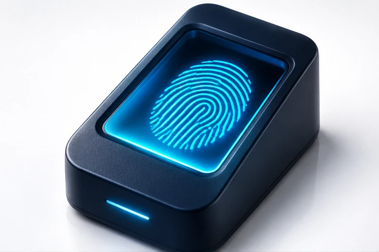
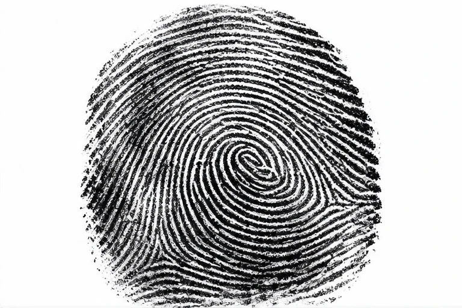

First, the sensor reads
Your finger has ridges (raised lines) and valleys (lower gaps). When you touch the scanner, the sensor measures those differences and produces a digital reading.
A capacitive sensor measures electrical differences; an optical sensor uses light; and an ultrasonic sensor uses sound reflections.
Capacitive scanners use an array of tiny electrodes. The ridge areas are closer to those electrodes than valleys, changing the measured capacitance. Optical readers record reflected light, while ultrasonic sensors use reflected acoustic waves. Sensor technology changes, but every system must create a usable fingerprint representation.

The signal becomes an image
The software creates or processes a pattern of lines. It may improve contrast, reduce noise and find the direction of the ridges before searching for features.
The scanner samples signals into an array of digital values. Image-processing steps can include segmentation (finding the finger region), contrast enhancement, orientation estimation, and ridge thinning so that important points can be located reliably.

It looks for the tiny clues
A ridge ending is where a ridge stops. A bifurcation is where a ridge splits. These are called minutiae, and their positions and directions help distinguish fingerprints.
The algorithm doesn't need a perfect pixel-by-pixel copy of the original scan.
For each minutia, an algorithm may record its x–y location, ridge direction, and whether it is an ending or bifurcation. Poor contact, dirt, and motion can hide real minutiae or create false ones.

The template is saved
During enrollment, the extracted features are saved in a structured record called a template. That template is linked to a person's ID — for example, Alex #001.
The fingerprint pattern itself cannot tell the device the person's name.
Enrollment can involve more than one capture to improve quality. A template is biometric data and should be protected using appropriate access controls and secure storage. Template formats and storage practices vary by system.

A new scan is compared
Next time, the scanner captures a fresh reading and extracts its features. Software tries to align those features with the saved template and calculates how similar they are.
If the similarity passes a chosen threshold, the system accepts the match and retrieves the linked ID. Otherwise it rejects it.
Matching must tolerate small changes in position, rotation, and pressure. The matcher aligns feature sets, counts consistent correspondences, and uses a threshold. A stricter threshold may reduce false accepts but increase false rejects. In verification, one claimed identity is checked; in identification, the query is searched against multiple enrolled records.
Note: This website's experiment uses synthetic fingerprints and a simplified feature matching algorithm. It does not collect real biometrics or claim production accuracy.
Photographic and scientific reference images are sourced from Wikimedia Commons; each file page lists its author and reuse license.
Scientific reference: NIST fingerprint minutiae interchange specification. The interactive activity uses artificial examples, not a validated biometric system.